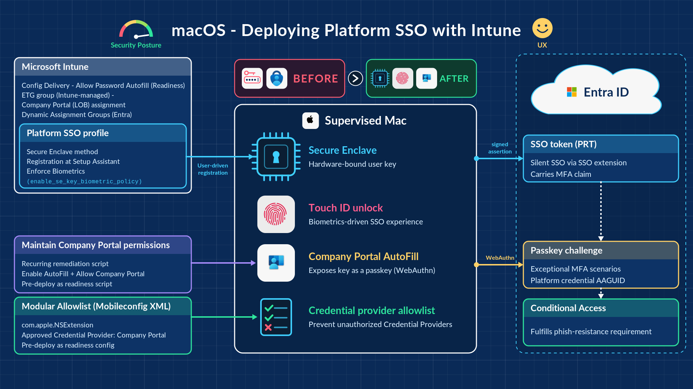

In my last couple of posts in the Modern Endpoint Management community, I shared my opinions and concerns about the shortfalls of deploying Platform SSO with Intune out of the box. In this post, I will share the ultimate solution and close the loop for good. (Link to the GitHub repo at the end of the post.)
The picture above alone should be enough for your agent to build the whole solution, but I did it the other way round, fixing one problem at a time.
Note: I will only focus on the high-level approach and the key solutions to the blockers that historically prevented PSSO rollout with Intune. To learn more about PSSO with Intune, refer to the following articles:
The approach
Design
Review Microsoft and Apple documentation and decide the deployment model. In my opinion, Secure Enclave with Biometrics enforcement will suit most organizations. Create the PSSO Settings Catalog policy based on your deployment model (user assignment is required for registration during enrollment).
Consider both scenarios
- Existing devices
- New enrollments
Solve the fundamental challenges
Detailed below.
Solving the fundamental challenges
1. Company Portal delay during enrollment
It is a known issue and I had to invent the fix. The answer is using Enrollment Time Grouping (ETG) and deploying only the Company Portal (LOB) app to this group. This is currently the only consistent way to ensure Company Portal wins the race against the PSSO registration workflow during enrollment (90% success). To achieve this, you need to migrate your supervised devices from the legacy enrollment profiles to the new enrollment policies.
2. Allow Password AutoFill
Without this, Company Portal cannot be used as the passkey provider.
3. Password AutoFill and Company Portal permissions
This was the second blocker in the design. For the solution to fully work as expected, Company Portal needs AutoFill permissions. This is a two-stage process: Password AutoFill must be enabled system-wide, and subsequently Company Portal must be registered as a credential provider. There is no native way to achieve this via the Settings Catalog, and relying on end users to do it manually would lead to a poor user experience and higher failure rates. Further, allowing Password AutoFill (not enabling) via policy would create a risk of unapproved third-party apps being registered as credential providers. Here's what I did to fix these challenges:
Password AutoFill enablement and Company Portal permissions, pre-deployed as a readiness script - Microsoft published a very helpful script on GitHub that enables Password AutoFill and Company Portal permissions, but ONLY once PSSO registration is detected as successful. I felt this was a reactive approach and too late, because the user would have already enabled it manually during the PSSO registration prompt or called the helpdesk. So I tweaked the script to enable AutoFill and configure Company Portal permissions regardless of the PSSO registration state. As a result, I can now pre-deploy it as a readiness script before the PSSO rollout and ask users to just Dismiss the AutoFill enablement prompt during PSSO registration.
The AutoFill enablement prompt during PSSO registration (in-OS) is hard-coded and doesn't check whether it's already enabled. Since this step is already fulfilled by the script in advance, it is recommended to educate the users/support teams to Dismiss the step as part of the comms.
Now that Password AutoFill is allowed via policy and enabled via script, we need to control which apps can register as credential providers. Use this mobileconfig XML to ensure that only approved apps are allowed to register as credential providers. Company Portal is pre-defined, and Apple's native password manager cannot be disabled - I can live with that for now. This custom configuration should also be pre-deployed as a readiness configuration.
4. Company Portal (LOB) app
Deploy this to your ETG group. This is required for the new enrollment scenario, to ensure Company Portal is installed before the user is offered PSSO registration. This is the key prerequisite, and a high-speed internet connection with the appropriate firewall exceptions is a must for it to work consistently.
5. Upgrade older macOS versions to 26 or later
PSSO registration during enrollment requires macOS 26 and above.
6. Audit
Ensure that all of the above is in place before planning the rollout.
Rollout
Once the above steps are complete, all you need to do is send the comms and start adding users to the PSSO group. Do remember to advise them to Dismiss the Company Portal AutoFill permission prompt during PSSO registration.
You can now sleep well.
Everything referenced above - the readiness script, the AutoFill provider allowlist and deployment guidance - is in the GitHub repository.
Get the resources
Readiness script, AutoFill provider allowlist mobileconfig and deployment guide
macOS-Intune-PSSO-Readiness on GitHub